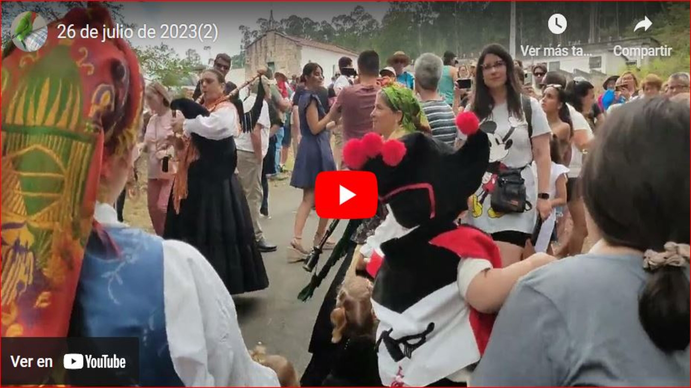

El Santiaguiño do Monte es una romería tradicional que se celebra cada año en julio en la parroquia de Atán, perteneciente al ayuntamiento de Padrón, A Coruña. Cuenta la leyenda que en el siglo IX, durante la invasión musulmana, los restos del Apóstol Santiago fueron escondidos en el bosque del Monte de Atán para protegerlos. Desde entonces, cada año los vecinos realizan una peregrinación a la ermita situada en la cima del monte en honor al Apóstol. La fiesta dura tres días en los que se reúnen miles de personas para disfrutar de la música tradicional, la gastronomía local y el buen ambiente.
Fotos y Vídeos

